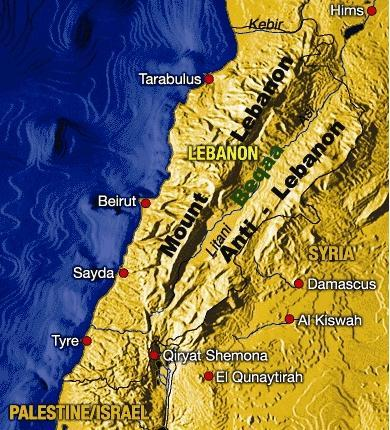

The coastline: This small piece of land between the Mediterranean and the mountains is where most of the population is living. Major cities and towns like Beirut, Tripoli, Byblos, Saida, Tyre are situated along the coast. The density of the population is very high from Beirut to the town of Byblos. The climate is sub-tropical, there is no frost. Winters are humid and mild; summers are dry and very hot. Agriculture in this area consists mainly banana plantation especially in the south and Olive groves in the north.
The mountains: Next to the narrow coast line a chain of mountains call Mont-Lebanon crosses the country. The highest point is 3090 meters above the sea. Plantation and climate depend of the ground elevation. You find olive, orange and citrus groves; apple and pear trees. During the summer, many Lebanese spend the weekend in the mountains to avoid summer heat. During winter, the mountains are a paradise for all wintersports.
The Bekaa Valley: this fertile area is a farming region. Mediterranean climate with cold winters and hot dry summers permits tomato, potato, bean, and grapefruit plantations. Rain fall is limited throughout the year.
L'anti-Lebanon: This arid chain of mountains is the natural frontier with Syria.
The climate varies from a Mediterranean-type subtropical climate along the coast and in the Bekaa Valley to a generally cool one in the upper mountains. Summers are hot and dry; winters are mild and humid. Frost is rare at lower elevations. The mean temperature in the lowlands is 26.7° C (80° F) in summer and 10° C (50° F) in winter. The mountainous region is somewhat cooler. Annual precipitation, occurring mainly in winter, is 889 mm (35 in) along the coast, 635 mm (25 in) or less in the Bekaa Valley, and more than 1270 mm (more than 50 in) in the mountains. In some spring months, one can ski in the mountains and swim on the coast, both in the same day.
